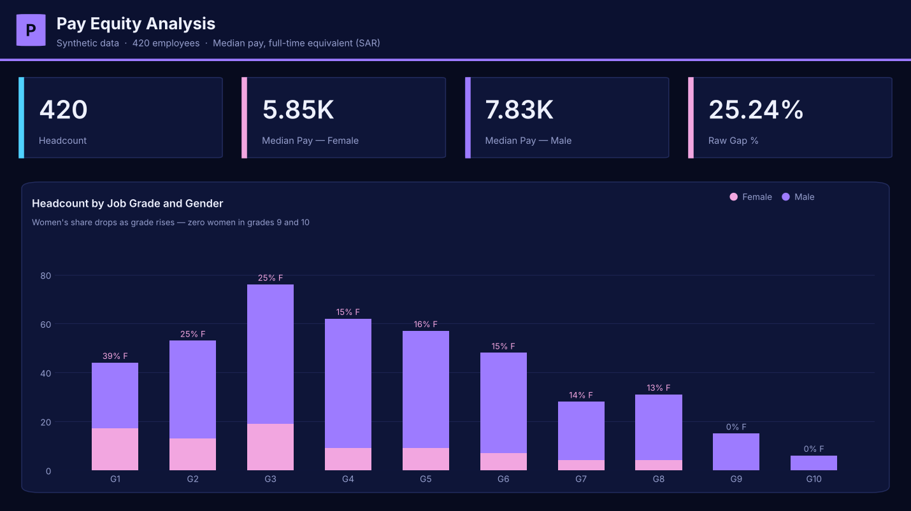
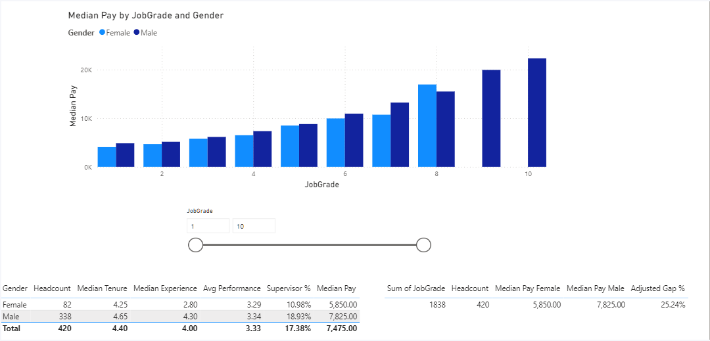
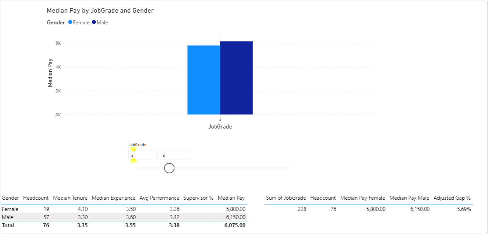

بدأت هذا المشروع بسؤال واحد: لو طلع لدينا فرق في متوسط رواتب الرجال والنساء، هل هذا دليل على تمييز؟ الإجابة أعقد من نعم أو لا، وهذا التحليل يشرح كيف نفكّك الرقم بدل ما نأخذه كما هو. والهدف أن أفرّق بين مشكلة في الأجر نفسه ومشكلة في توزيع الوظائف، لأن كل وحدة لها علاج مختلف تماماً.



حذف السجلات المكررة بالرقم الوظيفي، وتوحيد قيم الجنس والأقسام.
بنيت عمود Basic FTE يقسم الراتب على نسبة دوام الموظف.
قارنت وسيط أجر النساء بوسيط أجر الرجال على مستوى الشركة كاملة.
قبل ما أسمّي أي فرق "غير مبرر"، قست أربعة عوامل تفسّر عادةً اختلاف الأجور بين موظفَين في نفس الدرجة: مدة الخدمة، الخبرة السابقة، تقييم الأداء، والدور الإشرافي. بدون هذه الخطوة يكون التحليل اتهاماً لا تحليلاً.
كررت المقارنة داخل كل درجة وظيفية على حدة، بحيث ما أقارن إلا أشخاصاً في نفس المستوى. هنا يظهر الفرق بين مشكلة في أجر الوظيفة الواحدة ومشكلة في توزيع الوظائف.
كان في قسم مكتوب بصيغتين بسبب مسافة زائدة في نهاية النص، وخمسة سجلات مختصرة في عمود الجنس. Power BI ما يعطيك رسالة خطأ لو تكرر مسمى بصيغتين — يتعامل معها كفئتين مستقلتين ويطلّع لك رقماً يبدو منطقياً وهو خاطئ. وحّدت القيم، فرجعت السجلات الساقطة وطلعت الفجوة الصحيحة.
موظف الدوام الجزئي راتبه أقل لأنه يشتغل ساعات أقل، مو لأن في ظلم. بدون تعديل يدخل فرق الساعات في حساب الفجوة. فبنيت عمود Basic FTE يوحّد الأجور على أساس الدوام الكامل.
المتوسط يتأثر بعدد قليل من الرواتب المرتفعة جداً. في هذه البيانات كل شاغلي الدرجتين العليا رجال، فالمتوسط كان بيضخّم الفجوة بسبب ستة أشخاص لا بسبب الوضع العام. فاعتمدت الوسيط بدل المتوسط.
الفجوة الخام 25.24%، لكنها تنكمش إلى ما بين 3% و 19% لما نقارن داخل نفس الدرجة. هذا يعني أن الجزء الأكبر منها ناتج عن مكان النساء في الهيكل الوظيفي، لا عن الأجر المقرّر للوظيفة الواحدة.
نسبة النساء تنخفض بشكل مطّرد كلما ارتفعت الدرجة: 60% في الدرجات الدنيا، 10% في الدرجتين 7 و 8، وصفر في الدرجتين 9 و 10.
العوامل الأربعة لم تفسّر إلا جزءاً محدوداً. أوضح مثال في الدرجة الثالثة: النساء هناك أقدم في الشركة (4.1 سنة مقابل 3.3)، وبخبرة سابقة متطابقة تقريباً، ولا أحد من الطرفين في دور إشرافي — ومع ذلك وسيط أجرهن أقل بنسبة 5.69%.
| الدرجة | عدد النساء | عدد الرجال | وسيط أجر النساء | وسيط أجر الرجال | الفجوة |
|---|---|---|---|---|---|
| 1 | 17 | 27 | 4,050 | 4,833 | 16.21% |
| 2 | 13 | 40 | 4,700 | 5,158 | 8.89% |
| 3 | 19 | 57 | 5,800 | 6,150 | 5.69% |
| 4 | 9 | 53 | 6,500 | 7,350 | 11.56% |
| 5 | 9 | 48 | 8,500 | 8,800 | 3.41% |
| 6 | 7 | 41 | 9,950 | 10,950 | 9.13% |
| 7 | 4 | 24 | 10,725 | 13,225 | 18.90% |
| 8 | 4 | 27 | 16,950 | 15,500 | −9.35% |
| 9 | 0 | 15 | — | 19,950 | — |
| 10 | 0 | 6 | — | 22,342 | — |
الأجور بالريال السعودي على أساس الدوام الكامل. الدرجات 7 و 8 فيها أربع موظفات فقط، فأرقامها أقل استقراراً من غيرها ولا تصلح لبناء قرار عليها وحدها.
الدرجات 1 و 4 و 7 تستحق فحص ملفات أفرادها: تاريخ الالتحاق، الراتب الابتدائي، وسجل الزيادات. الرقم الإجمالي يحدد أين ننظر، والملف الفردي هو اللي يفسّر.
غياب النساء عن الدرجتين العليا لا يُعالَج بزيادة رواتب. يُعالَج بمراجعة معايير الترشيح للأدوار الإشرافية ومن يُدعى إليها.
الفجوة موجودة في الدرجات الدنيا حيث الخبرة السابقة قريبة من الصفر للطرفين، وهو ما يوجّه الشك نحو نقطة الدخول لا نحو الزيادات اللاحقة.
البيانات في هذا المشروع تركيبية بالكامل. وُلّدت لأغراض التعلّم ولا تخص أي جهة أو موظفين حقيقيين. المنهجية وحدها هي القابلة للنقل على بيانات فعلية.